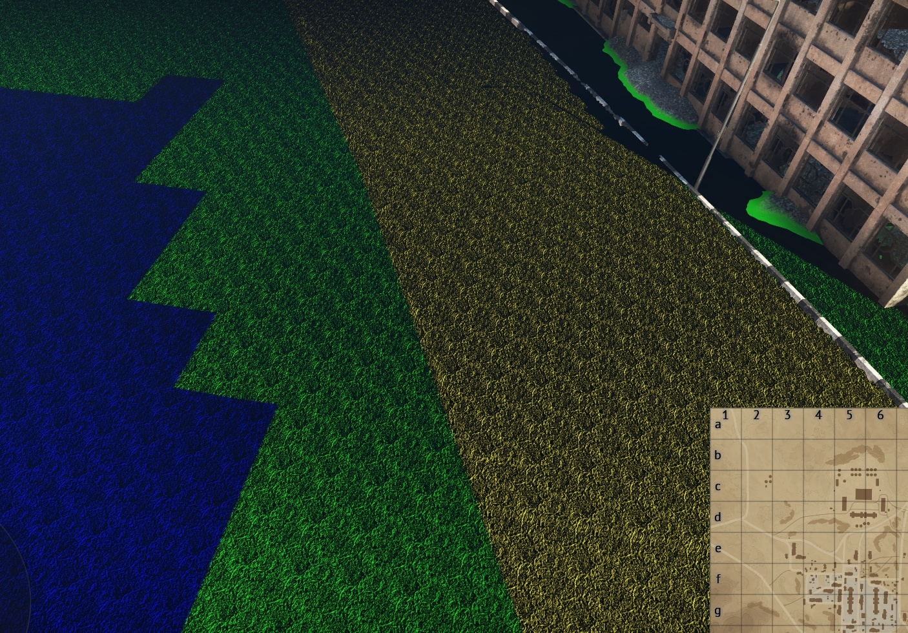
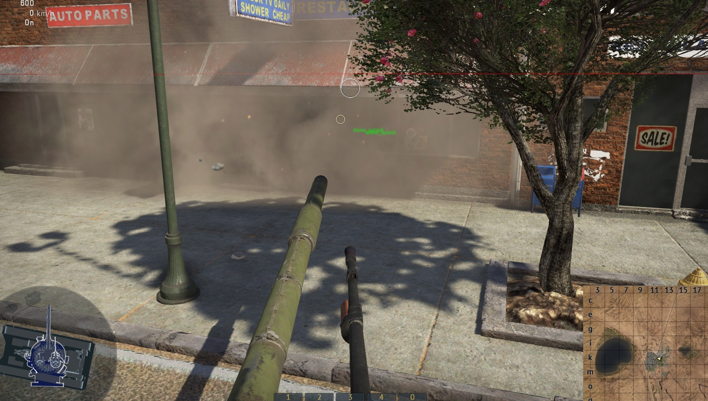
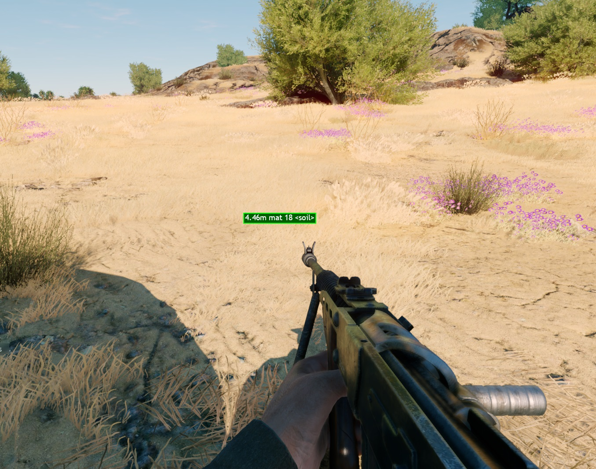
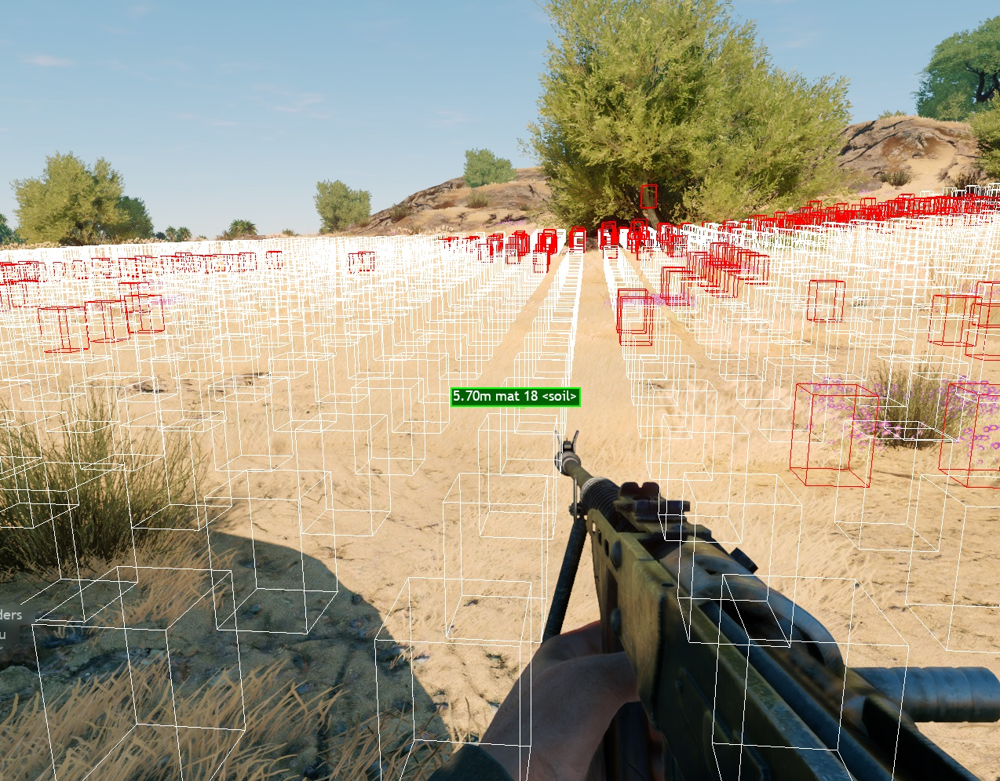

Physmats
Placement and Configuration
Physmats (short for physical materials) define the physical properties of surfaces and objects the player interacts with, such as terrain, environmental assets, or destructible objects. These interactions include driving over, colliding with, shooting at, or destroying the materials.
The physical material configuration defines the following properties:
Passability: Specifies whether a surface or object can be traversed.
Interaction Effects: Determines the visual, audio, or gameplay effects triggered during player interaction.
Vehicle Behavior: Defines how each material type influences vehicle handling and response.
The physmat configuration file is located at:
<project_name>/develop/gameBase/config/physmat.blk
File Structure
The general structure of the physmat configuration file is as follows:
PhysMats{ // Container block for all physical materials
__DefaultParams{ // Default parameters applied to all physmats unless explicitly overridden
a
b
...
}
physmat1{} // Individual physmat definition with its specific parameters
physmat2{}
...
physmatN{}
}
InteractPropsList{ // Configuration block for player interactions with physical materials
visibilityCamera{ // Defines physmats that do not collide with the camera
transparentCamera{ // A physmat excluded from camera collision
en:b= no // 'no' disables collision with the camera
}
}
visibilityRay{ // Defines physmats that are transparent for ray tracing
// For example, through which tank markers should remain visible.
transparentBeton{ // A physmat through which tank markers remain visible
en:b= no // 'no' disables collision with the tracing ray
}
}
tankTrack{ // Defines physmats that interact with tank tracks
// All driveable physmats must be listed here
default{ // Physmat entry
fk:r= 1.0 /* Friction coefficient multiplier; 1.0 is standard, values < 1 simulate slippery surfaces,
e.g., setting '0.5' simulates ice. */
rollingFrictionK:r= 0.045 /* Rolling friction coefficient; lower values reduce rolling resistance
Hard surfaces typically have lower values than soft ones */
}
}
wheel{ /* Defines physmats that interact with vehicle wheels
All driveable physmats must be listed here */
default{ // Physmat entry
fk:r= 1.0 / Friction coefficient multiplier; 1.0 is standard, values < 1 simulate slippery surfaces,
e.g., setting '0.5' simulates ice. */
rollingFrictionK:r= 0.03 /* Rolling friction coefficient; lower values reduce rolling resistance
Hard surfaces typically have lower values than soft ones */
}
}
}
Physmat Parameters
The following parameters are currently supported in physmat definitions. These
are demonstrated using an example physmat named horse{}, which includes all
known configurable properties:
horse{}Name of the physical material. Must be unique within the configuration.
bf_class:t = "horse_class"Material class identifier. This acts as a tag used to reference the physmat in the
InteractPropsList{}block.color:c = 255,162,0,100Debug render color in RGBA format. Typically used for visual debugging. Usage is currently uncommon.
isWater:b = 0Specifies whether the material represents water. A value of
1marks it as water.isUnit:b = 1Indicates whether the material represents a unit (e.g., a vehicle or character).
Aircraft-Specific Parameters
shakeMultiplier:r = 1Multiplier affecting screen shake when aircraft interact with this material.
frictionMultiplier:r = 1Friction multiplier applied to aircraft interactions.
Tank-Specific Parameters
dustFactor:r = 0.14Controls the amount of dust that accumulates on tanks from this material.
mudFactor:r = 0.1Controls the amount of mud that accumulates on tanks.
deformable_width:r = 0.05Defines the deformation depth of terrain under tank tracks.
tankTracksTexId:i = 0Likely specifies the texture ID used for track marks left by tanks.
resistanceK:r = 0.00035Friction coefficient for tank movement over this material.
trackEffectsPreset:t = "soil"References a named preset from the
trackEffectsPresets{}block ingameParams.blk. Defines the visual and audio effects triggered when a tank drives over this material.trackDirtSpawnRateMult:r = 1.2Multiplier that controls the rate of dirt or particle effects generated by tank tracks on this material.
Explosion and Impact Parameters
Important
The explosionPatch{} block is interchangeable with the explMat parameter.
Only one of these should be specified per physmat. Specifying both is
unsupported. If neither is defined, the client may crash. Details below.
Explosion Patch Parameters
These parameters define the visual and physical behavior of bomb or rocket
explosions (typically from aircraft). When used, they replace the need for
explMat.
explosionPatchShader:t = "explosion_patch"Presumed to define the decal shader for explosion effects. May involve both normal and diffuse maps. SDK did not reveal its effect.
explosionPatchTexture:t = "explosion_patch_rocks_n"Likely defines the normal map texture used for explosion decals. SDK did not reveal its effect.*
explosionPatchTexcoord:p4 = 0, 0, 1, 1Presumably sets the texture atlas coordinates used for explosion decals. SDK did not reveal its effect.
explosionPatchHeightScale:r = 0.01Likely controls the heightmap deformation scale applied to explosion decals. SDK did not reveal its effect.
Alternative Explosion Material
explMat:t = "default"References an explosion material defined in the
explMat.blkfile. This parameter is interchangeable with the explosion patch parameters above. Only one should be used; otherwise, the client will crash.
Explosion Effects
explosionWreckage:t = "rocks_expl"Defines the model used for debris or wreckage generated during explosions.
explosionFx:t = "ground_explosion_fx"Specifies the visual effect triggered during an explosion.
Physical Impact Modifiers
iak:r = 0.2Impulse absorption coefficient. Accepts values in the range
0.0to1.0.0means no impulse is applied;1means full impulse is applied.damage_k:r = 0.3Multiplier for damage applied on impact.
Projectile Penetration Effects
pierceFxType:t = "ad_sand"Defines the effect triggered when a projectile penetrates the material without being stopped. This can be overridden for specific ammunition calibers.
pierceFxScale:p2 = 0.1, 0.2Specifies the minimum and maximum scale for the
pierceFxTypeeffect. The default scale is1.0. Can be overridden per ammunition type.
Gunfire Decal Parameters
This block defines visual and physical properties for decals and effects generated by gunfire impacts on physical materials.
Decal Textures
rendinst_colorMap:t = "explosion_patch_ground_c"Specifies the diffuse (albedo) texture used for gunfire decals. Transparency is determined by the alpha channel. If no alpha is present, the albedo defaults to black and a soft radial fade is applied, producing a dark circle.
rendinst_normalMap:t = "explosion_patch_n"Defines the normal map used for gunfire decals. Standard smoothness and metalness values are assumed unless otherwise overridden.
Decal Rendering Controls
The following optional parameters control which visual components of the decal are rendered. These are useful when selectively disabling certain effects such as color or normal influence:
writeAlbedo:b = noDisables albedo (diffuse color) rendering. Useful when only normals are needed.
writeSmoothness:b = noDisables the smoothness (roughness) channel rendering.
writeNormal:b = noDisables normal map rendering.
writeMetal:b = noDisables metalness rendering.
writeShadow:b = noDisables shadow casting for the decal.
Impact Effects
hitFxType:t = "ad_sand"Specifies the visual effect triggered upon gunfire impact. This can be overridden for specific ammunition calibers.
hitFxScale:p2 = 0.1, 0.2Sets the minimum and maximum scale for the
hitFxTypeeffect. Can also be overridden per ammo type.breachMat:t = "steel"Defines the breach material type used when a projectile penetrates a vehicle. Common values include
"steel"or"wood", used to apply appropriate decal effects.
Vehicle Interaction Parameters
shakeProps { period:p2 = 0.35, 0.7; power:p2 = 1, 1; mult:p2 = 0.5, 0.2; }Controls wheel shake when tanks drive over this material.
perioddefines the frequency range of the shake.powercontrols the intensity.multapplies additional modulation.
arcadeProps { boost:r = 1.0; }Affects the arcade-mode boost calculation for tanks interacting with this material.
Deprecated or Unused Parameters
The following parameters are considered obsolete or are replaced by other blocks:
sizeInCalibers:r = 2Not currently used.
shakePeriod:p2 = 0.35, 0.7Deprecated. Use
shakePropsinstead.shakePower:p2 = 1.0, 1.0Deprecated. Use
shakePropsinstead.shakeMult:p2 = 0.5, 0.2Deprecated. Use
shakePropsinstead.arcadeBoostMult:r = 1.0Deprecated. Use
arcadePropsinstead.
Mandatory Physmat Parameters for Render Instances
To reduce duplication, physmats are not divided into separate “prop” and “terrain” categories. As a result, all physmats are expected to include a common set of parameters, regardless of their intended use. While not all parameters are strictly required in every case, omitting key fields can result in missing effects or gameplay issues.
If minimal setup is required, the following parameters are empirically known to be mandatory to ensure correct behavior. This list is not exhaustive:
hitFxType:t = "ad_explosion_glass"Defines the particle effect triggered on impact. Without this parameter, the expected visual effect will not play.
hitFxScale:p2 = 0.1, 0.2Specifies the scale range for the hit effect. If omitted, the effect will play at its default size, which may not suit the context.
explMat:t = "default"or explosion patch parametersRequired for explosion handling. If neither
explMatnorexplosionPatchparameters are defined, explosion effects (e.g., tank shell impacts) may fail or cause visual bugs.tankTrack {}andwheel {}blocksDefine friction and rolling behavior for tracked and wheeled vehicles. If these blocks are missing, vehicles will not be able to traverse the physmat at all.
Overriding Physmat Parameters in Other Configurations
Physmat parameters are frequently overridden within the configurations of other game objects, such as landscapes, projectiles, or vehicles. This can lead to unexpected physmat behavior if overrides conflict with the base physmat settings.
If a physmat does not behave as intended, it is important to check related configurations for parameter overrides. Currently, the physmat system contains numerous such overrides, contributing to complexity and inconsistencies.
The long-term objective is to establish a clean, well-defined physmat configuration set that minimizes or eliminates the need for overrides, thereby simplifying maintenance and improving predictability.
Projectiles
Improper physmat behavior on projectiles most commonly appears in visual effects (FX). For example, a projectile may hit concrete, but trigger a glass impact effect, or the FX may appear at an incorrect scale (e.g. twice the intended size).
This often results from FX overrides in projectile configuration files. All
projectile-related configurations are located at:
<project_name>/develop/gameBase/gameData/weapons.
Each projectile can be used by different vehicle types. To trace and validate the applied physmat and FX settings, follow the steps below.
Identify the Vehicle
Determine the vehicle in use by checking the mission file being launched. For example, the vehicle might be:
`ussr_t64_b_1984`
Locate the Weapon Preset
Find the weapon preset for that vehicle in:
<project_name>/develop/gameBase/gameData/units/tankModels/weaponPresets
For the example above, the corresponding file might be:
ussr_t_64_b_1984_common.blk
Locate the Projectile Definitions
Assume you’re inspecting machine gun behavior. The process is identical for all projectile types. Common weapon configurations include:
groundModels_weapons/7_62mm_PKT_user_machinegun.blkgroundModels_weapons/12_7mm_NSV_user_cannon.blk
Open the relevant file to inspect projectile includes. Go to the relevant configuration files and find references to the
fxdirectory at<project_name>/develop/gameBase/gameData/weapons/fx(this directory contains the FX settings for projectiles).For example, in
7_62mm_PKT_user_machinegun.blk:include "#/develop/gameBase/gameData/weapons/bullets/USSR/_7_62mm_shkas_b32_bullet.blk"
In turn, this bullet definition includes an FX configuration:
include "#/develop/gameBase/gameData/weapons/fx/_8_11mm_ap_hit_fx.blk"
Likewise, in
12_7mm_NSV_user_cannon.blk:include "bullets/ussr/_12_7mm_dshk_bzt_44_APIT_bullet.blk" include "bullets/ussr/_12_7mm_dshk_mdz_HE_bullet.blk" include "bullets/ussr/_12_7mm_dshk_bs41_API_bullet.blk"
These include references like:
include "#/develop/gameBase/gameData/weapons/fx/_12_18mm_ap_hit_fx.blk"
Inspect FX Configuration Files
Open the
.blkfiles underweapons/fx/to review their effect definitions.For example, in
_12_18mm_he_hit_fx.blk:groundCollisionEffect:t= "hit_12_18mm_dirt_he" /* Default FX when hitting the ground. Used if the physmat lacks a defined 'hitFxType:t'. */ ricochetEffect:t= "hit_12_18mm_metal_ap" // FX for ricochets on metal surfaces. waterCollisionEffect:t= "hit_12_18mm_water" /* FX for impacts on water surfaces. Also used when no specific 'hitFxType:t' is provided. */
The file may also contain a collisions block for physmat-specific overrides:
collisions{ default{ // physmat name fx:t= "hit_12_18mm_dirt_he" // Overrides 'hitFxType:t' with a hardcoded FX for this projectile. } horLandMesh{ fx:t= "hit_12_18mm_dirt_he" } ... }
Defining Physmats in Game Resources
Physmats can be assigned to various game assets such as prefabs or ground decals by modifying their material properties. Proper assignment ensures correct behavior during interactions like vehicle movement, projectile impacts, and environmental effects.
Prefabs
To assign a physmat to a prefab, append the physmat name to the material
definition using the @ symbol:
name:t= "lake@ice"
In this example, the material “lake” is associated with the ice physmat.
Ground Decals
For decals that require explicit physmat behavior, the physmat can be defined using the script parameter in the material properties:
script:t="phmat=concrete" // where "concrete" is the desired physmat type.
This assigns the concrete physmat to the decal. It is typically used for decals that represent ground types, damage marks, or effects-sensitive surfaces.
Limitations and Tooling
Physmats are not currently visible in the Asset Viewer or in the daEditor and must be verified manually:
When working with daNetGame-based projects:
If a decal is placed on surfaces with mixed digging behavior (e.g., some allow shoveling, some do not), assigning a physmat to the decal is unnecessary.
In such cases, the underlying terrain’s physmat will be used during interactions like digging.
Render Instances
Physmats can be applied to render instances using one of the following methods:
Option 1: Via Material Property
Add the physmat directly to the material definition in any .blk file that
describes object properties. Common files include:
_buildings_dmg.blk_immortals.blkrendinst_dmg.blk
Example:
material:t= "ice"
This assigns the ice physmat to the render instance.
Option 2: Via Collision Node Script
Physmats can also be assigned through the object’s collision node by adding a script block:
script {
phmat:t= "ice"
}
This method is often more precise and ensures consistent interaction behavior.
Spline Classes
Physmats can be assigned to spline classes in two ways:
Method 1: Via Script Parameter
Add a script parameter to the spline material definition:
script:t= "phmat=rocks~r~n"
Note
If the material already uses a script parameter, append the physmat definition
to the existing string.
Method 2: Via Material Name
The more reliable method is to embed the physmat directly into the material name
using the @ syntax:
matName:t= "town_pavement_asphalt_debris_a@ice"
This binds the ice physmat to the spline material.
Limitations
Physmats currently apply only to simple materials and loft objects.
Assigning physmats to materials with
class_name:t = "land_mesh_combined"is not supported and will have no effect.
Export Behavior
Physmats assigned to spline classes are automatically included in the physmap during level export. This ensures correct behavior in gameplay for movement, impact effects, and interaction logic.
Land Classes
Physmats can be assigned to land classes and are included in the physmap during level export. Proper configuration is essential to ensure accurate in-game physics and interaction behavior on terrain surfaces.
Physmat Requirements
Physmats can be stored within the landmesh, but they require a detailed heightmap to function correctly. Without a valid heightmap, the physmat assignment will not take effect.
Assigning Physmats in Landclass Files
There are two main approaches for assigning physmats in landclass definitions:
Method 1: Per-Channel Assignment (Splatting Mask)
Physmats can be mapped to each color channel of the splatting mask:
physMatRed:t= "beton"
physMatGreen:t= "beton"
physMatBlue:t= "beton"
physMatBlack:t= "beton"
Note
If a specific color channel is not defined, the default physmat will be used in its place.
Method 2: Global Assignment (Single Physmat)
To apply a single physmat to the entire land class, use the physMat parameter
at the root level of the .blk file:
className:t= "landClass"
physMat:t= "beton"
Note
This parameter must be placed at the root. If nested inside another block, it will not function.
Preventing Blending Issues
When blending materials in the splatting mask, undefined channels may fall back
to an unintended default physmat. To avoid this, always define a global
physMat in the root of the landclass .blk. This ensures a consistent
fallback.
Biome-Specific Physmats
In biomes, landclass physmats can be assigned globally or overridden for specific detail indices:
physMat:t= "roadSoil" // Global physmat applied to all details by default.
physMatIndices { // Overrides for specific detail indices.
detail { index:i= 4; physMat:t= "roadSand" }
detail { index:i= 15; physMat:t= "rocks" }
detail { index:i= 16; physMat:t= "beton" }
}
Testing Physmats in the Game
To verify physmat behavior in-game especially for impact effects, vehicle interaction, or terrain response, a number of debug commands are available.
War Thunder Debug Commands
trace.debug_trace
Casts a debug ray from the camera to the surface.
Places a marker (sphere) at the point of intersection.
Displays the name of the physmat at that point.
Note
Use this to confirm which physmat is being registered under the cursor in the game world.
{kind=link}
{kind=link}
Landmesh.checkPhysmat
Similar to
trace.debug_trace, but specific to landmesh surfaces.Casts a ray and creates a debug sphere at the intersection.
Displays the physmat name at that point.
Note
Landmesh physmats now function without a detailed heightmap, but only for visual effects and simulated interactions (e.g., decals, FX). They do not support full physics interactions.
{kind=link}
{kind=link}
clipmap.physmap
Overlays the terrain with colors corresponding to physmats.
Useful for visualizing physmat distribution across the level.
Note
This command only works when
landquality:i = 0is set inconfig.blk, or when the terrain quality slider is set to Low in the game settings.The color used for each physmat is not explicitly defined. It is assumed to be controlled by the
color:c = R,G,B,Aparameter in the physmat configuration, but this has not been confirmed.
{kind=link}
app.debug
Displays all active FX in the client.
Useful for tracing visual issues, such as incorrect FX playing on impact.
Note
If a projectile plays the wrong FX on a physmat, use this command to inspect the effect in real time. This allows you to trace the FX back to projectile configuration overrides (see the Projectiles section for details).
{kind=link}
Commands for daNetGame-based Projects
aim.ruler <mode>
The aim.ruler command traces a ray from the camera to the environment and
visualizes physmat data at the point of intersection.
Available modes:
aim.ruler 1: Displays the physmat name and distance from the camera.
aim.ruler 2: Adds pixel-sized visual markers for physmat representation at the hit point.aim.ruler 3: Adds a color map overlay showing physmat distribution across various surface types, including:Landscapes
Decals
Road splines
Note
Use this command during runtime to confirm physmat mappings and identify mismatches in surface interaction behavior.
{kind=link}
{kind=link}
{kind=link}
Object Destruction (Windows) by Characters
A specialized physmat named window_wood is used to enable window-breaking
behavior when characters jump through or push against certain objects. This
physmat is finely tuned and should not be modified directly.
Note
The window_wood physmat is configured to break only under specific physical
conditions, such as a character jumping through the window at a velocity near
impulseSpeed:r = 2.5. It does not trigger from light contact.
How to Enable Character-based Object Breaking
To configure destructible windows (or similar objects) for character interaction:
Assign the correct physmat
Replace the existing physmat (e.g.,
"wood") with:phmat:t= "window_wood"
in the collision node or object definition.
Enable physics for the object
Ensure that physical collisions are active so the object can respond to character movement.
See also
For more information, see Static Object Collisions.
Tag the object in
rendinst_dmgAdd the following to the corresponding damage instance block
rendinst_dmg{}:material:t= "window_wood"
Rebuild resources
After making changes:
Rebuild Vromfs
Rebuild collision models for the updated assets